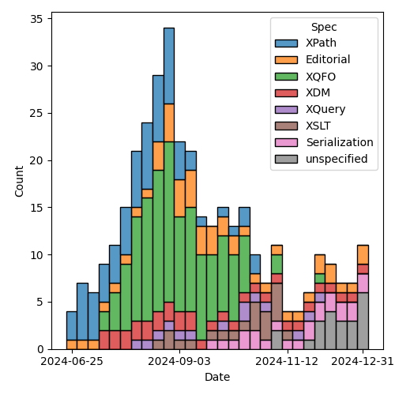
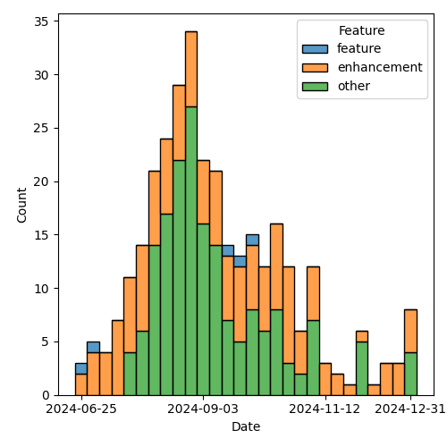

QT4 CG Meeting 104 Minutes 2025-01-07
Meeting index / QT4CG.org / Dashboard / GH Issues / GH Pull Requests
Table of Contents
- Draft Minutes
- Summary of new and continuing actions
[0/7] - 1. Administrivia
- 2. Technical agenda
- 2.1. PR #1679: 1678 Define element(E,T) and attribute(A,T) in terms of "derives-from"
- 2.2. PR #1677: 1675 Fixes for CSV parsing
- 2.3. PR #1676: 1621 Capabilities of Collations
- 2.4. PR #1674: 1662 Allow composite sort keys in xsl:sort
- 2.5. PR #1671: 1261 New fn:divide-decimals() function
- 2.6. PR #1617: 1606 Drop named item types, refine named record types, esp in XSLT
- 3. Any other business
- 4. Adjourned
Draft Minutes
Summary of new and continuing actions [0/7]
[ ]QT4CG-080-07: NW to update the build instructions in the README[ ]QT4CG-082-02: DN to work with MK to come to agreement on the fn:ranks proposal[ ]QT4CG-088-01: NW to consider how best to add a dedication to MSM.[ ]QT4CG-088-04: [Someone] needs to update the processing model diagram needs vis-a-vis the static typing feature[ ]QT4CG-089-01: CG to draft a PR that attempts to resolve the operators described in #755 to a smaller number of orthogonal choices.[ ]QT4CG-097-03: DN to proposal an axis for accessing the siblings of a node.[ ]QT4CG-103-01: MK to add an example of showing all the properties for an untyped node.[ ]QT4CG-104-01: MK to improve the wording aroundtrim-whitespacewrt spaces outside the quoted string[ ]QT4CG-103-02: MK to research alternative names fordivide-decimals.
1. Administrivia
“Happy New Year!”
1.1. Roll call [10/12]
Regrets: JK
[X]David J Birnbaum (DB)[X]Reece Dunn (RD)[ ]Sasha Firsov (SF)[X]Christian Grün (CG)[ ]Joel Kalvesmaki (JK)[X]Michael Kay (MK)[X]Juri Leino (JLO)[X]John Lumley (JWL)[X]Dimitre Novatchev (DN)[X]Wendell Piez (WP)[X]Ed Porter (EP)[X]Norm Tovey-Walsh (NW). Scribe. Chair.
1.2. Accept the agenda
Proposal: Accept the agenda.
Accepted.
1.2.1. Status so far…
These charts have been adjusted so they reflect the preceding six months of work.

Figure 1: “Burn down” chart on open issues

Figure 2: Open issues by specification

Figure 3: Open issues by type
1.3. Approve minutes of the previous meeting
Proposal: Accept the minutes of the previous meeting.
Accepted.
1.4. Next meeting
This next meeting is planned for 14 January 2025.
DN gives regrets.
1.5. Review of open action items [2/9]
(Items marked [X] are believed to have been closed via email before this agenda was posted.)
[ ]QT4CG-080-07: NW to update the build instructions in the README[ ]QT4CG-082-02: DN to work with MK to come to agreement on the fn:ranks proposal[ ]QT4CG-088-01: NW to consider how best to add a dedication to MSM.[ ]QT4CG-088-04: [Someone] needs to update the processing model diagram needs vis-a-vis the static typing feature[ ]QT4CG-089-01: CG to draft a PR that attempts to resolve the operators described in #755 to a smaller number of orthogonal choices.[X]QT4CG-097-02: MK to make the XSD schema component references into links to XSD[ ]QT4CG-097-03: DN to proposal an axis for accessing the siblings of a node.[ ]QT4CG-103-01: MK to add an example of showing all the properties for an untyped node.[X]QT4CG-103-02: MK to review other ways of handling namespaces in fn:path
1.6. Review of open pull requests and issues
1.6.1. Blocked
The following PRs are open but have merge conflicts or comments which suggest they aren’t ready for action.
1.6.2. Merge without discussion
The following PRs are editorial, small, or otherwise appeared to be uncontroversial when the agenda was prepared. The chairs propose that these can be merged without discussion. If you think discussion is necessary, please say so.
- PR #1673: 1407 TOC structure for types
- PR #1669: 1667 Revise handling of non-XML characters in parse-json
- PR #1668: Minor copy edits (no issue raised)
- PR #1666: 1649 result of function annotations
- PR #1665: 1650 Tidy up fn:type-of
- PR #1663: Remove DTD/stylesheet distractions at the top of the schema
- PR #1670: Action QT4CS-097-02: Enable xtermref links to XSD SCM property names
Proposal: merge these PRs without further discussion.
Accepted.
1.6.3. Substantive PRs
The following substantive PRs were open when this agenda was prepared.
- PR #1679: 1678 Define element(E,T) and attribute(A,T) in terms of "derives-from"
- PR #1677: 1675 Fixes for CSV parsing
- PR #1676: 1621 Capabilities of Collations
- PR #1674: 1662 Allow composite sort keys in xsl:sort
- PR #1671: 1261 New fn:divide-decimals() function
- PR #1617: 1606 Drop named item types, refine named record types, esp in XSLT
- PR #1609: 1651 Ordered Maps
2. Technical agenda
2.1. PR #1679: 1678 Define element(E,T) and attribute(A,T) in terms of "derives-from"
See PR #1679
- MK: This was a bug I introduced while reorganizing some text previously.
- … There’s a little bit of reorganizing in the prose…
- … Fixed the bug about type “T”: it isn’t only possible to define it by restriction, it can also be defined by extension or by membership in a substitution group.
- MK: Attribute tests have the same problem and the same solution.
Proposal: Accept this PR.
Accepted.
2.2. PR #1677: 1675 Fixes for CSV parsing
See PR #1677
- MK: This arose from an issue raised externally.
- …
row-delimiteris a character, not a string. - …
trim-whitespacewas being applied inconsistently - … My feeling is we shouldn’t trim quoted fields.
- … The
getfunction signature was inconsistent, I corrected that. - … We were slightly inconsistent about headers, I decided to allow an empty list.
- … Fixed the prose around “column names extracted” to clarify it.
- …
- JWL: We don’t have
xs:char, do we? - MK: No.
- CG: Gunther is adding the feature for Base-X. Regarding whitespace trimming, when a field is quoted, there could be whitespace before or after the quotes. I think his idea is that we should trim those spaces.
- MK: Yes, I’d be sympathetic to that. I’d be tempted to do it unconditionally. But maybe that’s too problematic.
ACTION QT4CG-104-01: MK to improve the wording around trim-whitespace wrt spaces outside the quoted string
- RD: Should we look at what libraries do before we decide?
- CG: Gunther looked at several libraries.
- JWL: There is an error if those delimiter strings are more than one character?
- MK: Yes. I’d hesitate to say where, but they are expected to be a single character.
Proposal: Accept this PR.
Accepted.
2.3. PR #1676: 1621 Capabilities of Collations
See PR #1676
- MK: This is an observation of mine that we’re inconsistent about whether
collations had to support ordering or just equality. The way we define things with deep equal,
that would fail, if the collation doesn’t support ordering.
- … After discussion on the issue, I concluded that the simplest answer was to say that all collations must support ordering, even if it’s implementation defined.
- … It effects the
fn:collation-availablefunction. - … There’s an editorial rewrite of the section on collations.
- … Added a section on collation capabilities that says all of them support comparison.
- … Added a note that says that the code point collation is not the same as UTF-16 code unit collation. That’s caught me out more than once!
- … In
fn:collation-available,sortis dropped as a capability but addskeyfor collation keys.
- DN: Can we find out if a collation supports equality? What’s the granularity of the capability.
- MK: You can ask for any combination of those three capabilities.
- DN: If I ask about the capability of a collation and then later ask again, am I guaranteed that the answer will be the same later? Is it meaningful to cache them for later?
- MK: Not for a user-defined collation.
- … For the collations we’ve defined…
- DN: Then maybe another property would be nice, are these answers permanent or temporary?
- RD: I’d expect the answers to remain constant. But the comparison might change, for example, between Unicode versions.
Some discussion of when things might change. National bodies can change the rules at any time.
- RD: Even if the rules change, the fact that a collation can do the comparison will remain unchanged, even if the answers change.
- MK: We leave the question of what to do when the world changes to implementors.
- WP: This sounds like a collation governance issue; it’s outside of our purview.
- DN: If collation capabilities can change, a property that defines when it was last changed would be helpful.
- MK: It’s similar to the problem with Unicode block names which have changed across Unicode versions. The Unicode consortium has tried to impose rules on itself, but they have moved characters and done other things. Inevitably, implementations struggle with these questions.
- NW: I had to do Unicode versions “by hand” for iXML testing.
- RD: I think DN is refering to the specific URI. Whether a particular German collation gains or loses a capability.
- MK: If it’s a collation we define, then I think we define the capabilities. For other collations, it depends on who defines the collation.
- NW: I think if you’re using a collation defined by someone else, you’re at the mercy of the providers.
- MK: There’s a long standing bug in Saxon related to the fact that the ICU implementation doesn’t do what the spec says it should under some circumstances.
Some more general discussion of what conformanc means and how we can set the expectations appropriately. Implementations have difficulty conforming in some edge cases and that’s just a fact. Occasionally, we make concessions in the spec for those reasons, but I think we should aim high.
- WP: To say nothing of how fixing the bugs can introduce new problems.
- MK: Indeed.
- JWL: It’s pretty analogous to referring to a document; we make gauranteeds within the scope of a query but not outside it.
Proposal: Accept this PR.
Accepted.
2.4. PR #1674: 1662 Allow composite sort keys in xsl:sort
See PR #1674
- MK: This was a third party suggestion. It got some “thumbs up” and it seemed
straightforward.
- … It removes an error condition that said that a sort key couldn’t contain more than one item.
- (MK reviews the rules)
- … The text on individual atomic items hasn’t changed, it’s just been moved.
- JLO: Interesting that you mentioned the XQuery problem of “empty first” or “empty last”.
- MK: In XSLT empty always come first.
- JLO: Why both in XQuery?
- MK: Because the empty sequence maps to NULL in SQL and SQL gives you a choice for where NULL sorts.
Proposal: Accept this PR.
Accepted.
2.5. PR #1671: 1261 New fn:divide-decimals() function
See PR #1671
- MK: This has been an open issue for a while; it’s been a Saxon extension for many years.
- … Decimal is a bit incomplete if you can’t control the precision of division.
- … This is just a standard feature of all big decimal libraries.
MK reviews the prose of the new function.
- DN: It seems confusing to me; I was expecting the result of decimal division
to be a decimal, not a fraction. The record is a fraction.
- … It seems inconvenient to me. If I’m using it in a sequence of functions, I’m going to have to deal with the fraction.
- MK: You get two decimals. That’s the way most of the decimal arithmetic
libraries do it. That’s how it’s done on C# and Java.
- … It’s a little awkward to use a function that delivers two results, but this is a reasonable way in our language.
- MK: This isn’t a fraction: it’s a decimal quotient and a decimal remainder.
- DN: Then perhaps I misunderstood.
- RD: This is a decimal generalization of integer division modulus combined operation.
- MK: Yes, I guess so.
- RD: So you could use it that way if you only have integer types.
- DN: In the examples,
divide-decmails(10, -3) = {"quotient": 3, "remainder": -1 }is confusing. - RD: You have three lots of -3 within 10 which gives you -9. The remainder is -1.
- JLO: I’m also not familiar with this kind of arithemetic, who uses it?
- DN: I propose that we rename this to
decimal-division-results - MK: You could call it
quotient-and-remainder - RD: The name
divmodseems to be what other languages use. - NW: That’s not a very XPath/XQuery name.
- RD: We have
idivetc.
ACTION QT4CG-103-02: MK to research alternative names for divide-decimals.
Proposal: Accept this PR.
Accepted.
2.6. PR #1617: 1606 Drop named item types, refine named record types, esp in XSLT
See PR #1617
This PR currently has merge conflicts, we’ll discuss it if those are resolved.
- MK: The merge conflicts are a manifestation of a more logical problem.
This PR needs more work.
- JWL: I looked through this one. There are a couple of spelling errors in the large example.
- … This is about record types, what about function types?
- MK: There was pushback last time we talked about it.
3. Any other business
None heard.